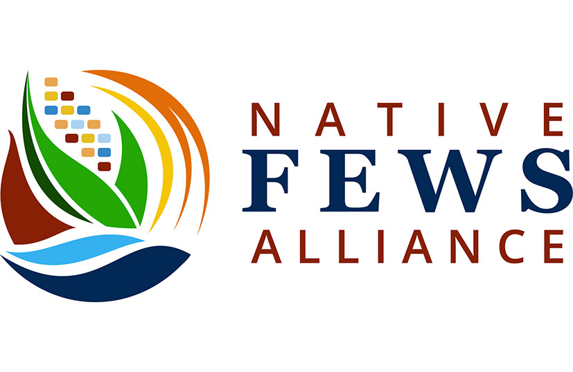

1 About us
We are an interdisciplinary, multi-institutional collaboration with the goal to increase equitable access to earth and environmental data science graduate pathways for Native American students. Our project involves developing, testing, and supporting culturally-centered environmental data science curriculum for classrooms, labs, and workshops via online modules and educational resources. Materials have been developed for Indigenous students with beginner level coding skills, and we encourage instructors with non-Indigenous students to be thoughtful and respectful about using the material.
Contact us
Interested in learning more or getting involved? Want to use material, host a workshop, or collaborate on new material? Contact us!
Email Dr. Rachel Torres at Rachel.Torres@humboldt.edu
Our collaboration includes:
- Jason McLachlan, University of Notre Dame
- Jody Peters, University of Notre Dame
- Nievita Bueno Watts, Cal-Poly Humboldt
- Diana Dalbotten, University of Minnesota
- Melissa Kenney, University of Minnesota
- Sean Dorr, University of Minnesota
- Georgia Smies, Salish Kootenai College
- Jeniffer LaCounte, Salish Kootenai College
- Antionette Abeyta, University of New Mexico, Gallup
- Chad Smith, University of New Mexico, Gallup

Ecological Forecasting Initiative: The Ecological Forecasting Initiative (EFI) is a grassroots consortium aimed at building and supporting an interdisciplinary community of practice around near-term (daily to decadal) ecological forecasts. EFI’s consortium aims to improve not only the science of ecological forecasting but also improve communication and collaboration by sharing resources, such as this compilation of educational resources.

Geoscience Alliance is a national alliance of individuals committed to broadening the participation of Native Americans, Alaska Natives, and people of Native Hawai’ian ancestry in the geosciences. Its members are faculty and staff from Tribal Colleges, universities, and research centers; Native elders and community members; industry and corporate representatives; students (K12, undergraduate, and graduate); formal and informal educators; and other interested individuals.

Native, Food, Energy, and Water Systems Alliance: Native FEWS Alliance is focused on the crisis in access to food, energy, and water in Indigenous communities and the paucity of educational and career pathways available to Indigenous peoples to address this crisis within their communities.

INRSEP + Diversity in STEM: Cal Poly Humboldt’s Indian Natural Resources, Science and Engineering Program (INRSEP) + Diversity in STEM provides academic and research support services to first generation, low income, and historically underrepresented students in STEM disciplines with a focus on American Indian and Indigenous students. We strive to work as partners with local tribal communities to learn from their wisdom and contribute to their goals.Our mission is to improve STEM fields by empowering our students to become leaders who give back to their communities, society, and future generations while strengthening connections with their heritage and culture.
Support
This project is supported by funding from the Alfred P. Sloan Foundation.